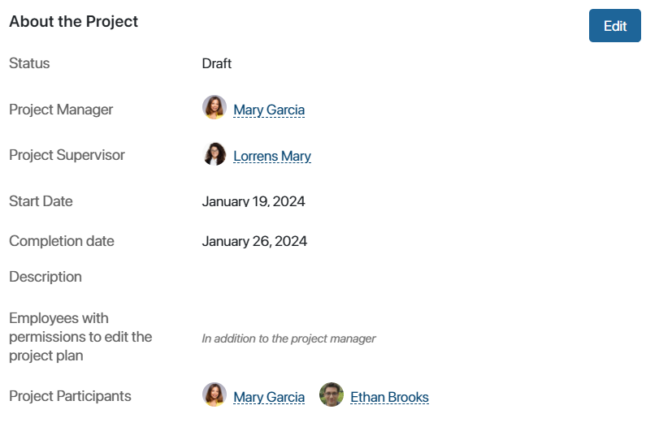

You can easily configure access to the Projects workspace including its apps, folders, and app items. For instance, you can grant the permission to create projects only to employees included in the Administrators group.
Access is role-based. By assigning people to certain roles you determine who can create and edit the project plan, who can monitor the work progress, and who can only open the project page.
To configure access permissions to project documents, please refer to Project files.
Set up access to the workspace
Access is configured in the settings of the built-in apps.
By default, access to the workspace apps is provided to all users. To restrict it, do the following:
- In the workspace left menu, click Set Up. Make the app you want to configure access to visible in the menu.
- Click on the gear icon next to the app’s name in the workspace menu and select Access Settings.
- Select Restrict access to data and specify the type of access: Restrict access to app, Restrict access to app folders or Restrict access to app items.
- Add a user, user group, or organizational chart item to the table and specify the types of access permissions granted to them.
In this way, assign users who can edit items of the Projects app. By default, the following actions are available for them on the project page: Edit Project, Open, End and Archive, Reopen.
Restrict access to a project
To assign access to a specific project on its page, click on the icon. It will be displayed in the About the Project widget if you restrict access to the Projects app within the item. Click the lock icon and then in the opened window add a user, user group or org chart item, and specify the types of permissions to be granted.
Assign users to roles
The roles and the assigned users are shown on the project page in the About the Project widget:

- Project Manager. The employee responsible for the project who will create and edit the project plan. They have full access to project documents.
- Project Supervisor. The employee who monitors the work progress. The supervisor cannot create, edit, or publish the project plan. However, they can edit the general information on the project page and have full access to the project documents.
- Employees with permissions to edit the project plan. Users, in addition to the project manager, who are authorized to create and make changes to the plan, submit the plan for approval, and publish it.
- Project Participants. Group includes employees assigned to all the above roles, as well as users specified as persons in charge and participants in tasks.
In a project, there can be only one Project Manager and one Project Supervisor. They are assigned to the role when the project is created or edited. To specify the project participants or the employees with permissions to edit the project plan, first add these fields to the creation and editing forms of the project:
- Click Set Up in the workspace left menu and make the Projects built-in app visible.
- Click on the gear icon next to the app name and select Form Settings.
- In the opened window, go to the Create or Edit tab. From the Context column on the left, drag the Employees with permissions to edit the project plan field to the right-hand side of the form.
- Save the changes.
Now you can assign users to these roles when creating the project or editing its information.